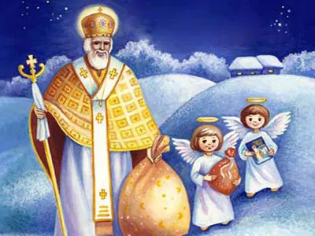

Санта Клаус
рождественский дед, отождествляемый с образом Николая Чудотворца, западноевропейский и североамериканский волшебный персонаж, который дарит подарки детям на Рождество Христово.
Дед Мороз
главный сказочный персонаж на русском празднике Нового года, русский вариант рождественского дарителя[1].

Святой Николай
святой в исторических церквях, архиепископ Мир Ликийских[3] (Византия). В христианстве почитается как чудотворец, на Востоке является покровителем путешествующих, заключённых и сирот[4], на Западе — покровителем практически всех слоёв общества, но в основном детей[5].